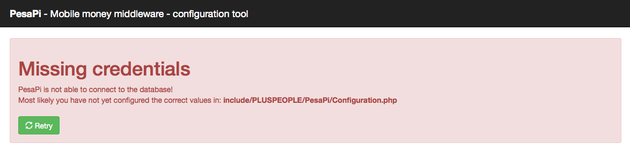
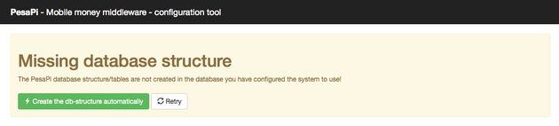
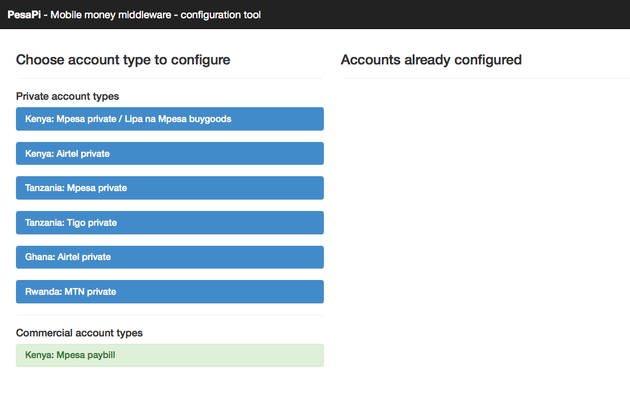
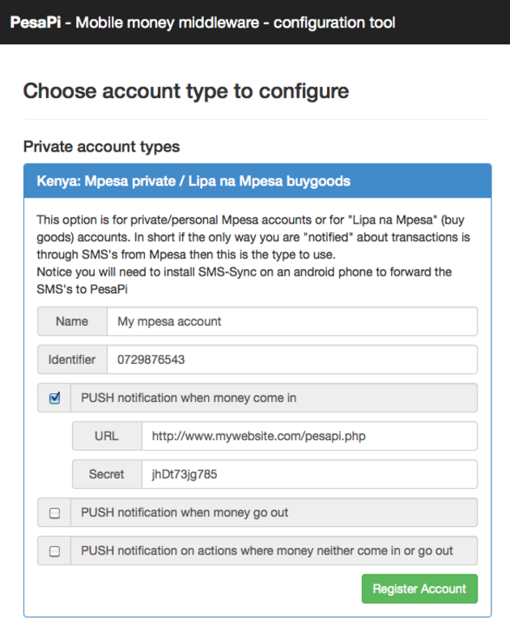

How-to use PesaPI
The main version of PesaPI is written in PHP and based on a LAMP stack. Some code have been contributed in effort to port PesaPi to C# and Java but none of this is yet at a fully working level.
Requirements for PesaPI:
- PHP Version 5.3.0 or above
- Mysql version 5 or above
- Curl & php_curl
- Webserver i.e Apache
Installation & setup procedure
In the following are described a simple PesaPi setup, depending on exactly what your needs are and how you want to use it (it's fairly flexible) your may have to deviate from this procedure a bit, but the main process is the same regardless.
1. Prepare and verify hosting
Find a suited hosting/server setup for where you want PesaPi running from, then verify that the above requirements are fulfilled.
2. Upload PesaPi
Next you need to ensure that PesaPi is installed in the choosen server/location.
It is the content from the php subfolder you want to copy to the server specifically:
- webroot
- include
- cron
In particular you want it so that the content of webroot is located in what is the webroot of your hosting setup and then you want include and cron subfolders to be in the parent directories (best practise is to keep those outside the webroot)
In some situations you may not even need a webserver to run PesaPi, in particular when dealing with commercial account types (i.e. MPESA Paybill) but you will need it initially for the next step.
3. Access the configuration tool
At this point you should be able to access configuration tool - that is the index.php file in webroot. So if you just type in the url of the site you should now be able to see the configurator.
The configurator will compain that it does not have access to the database (as you have not configured it) hence create an empty database and database-user then follow the instructions to modify Configuration.php with the correct database information - once done click reload
The configurator will now point out that the database you have created is empty (duh) and ask if you want it to create the initial database structure for your - choose yes
You should now see the main configuration screen, here you can configure which payment systems you want your PesaPi installation to work with, take note that PesaPi can work with multiple payment systems at the same time, put for the purpose of this guide we will just use one
Finally you need to choose the mobile money system you want to setup PesaPi to work with, the details can be slightly different from system to system, so for this example I will choose an MPESA Private account - that is the account that most "normal" people consider an MPESA account.
In this example I have given the account an (internal name), and I have used my phonenumber as the unique identifyer for this particular account.
I have configured PesaPi to push a notification to my main application when it detects that I have received a payment, in this case my main application is located at: http://www.mywebsite.com and the url I am planing to setup to be called when a payment is received is pesapi.php
Finally I have told PesaPi to include a secret of "jhDt73jg785" when it calls my main app (for security).
4. Configure your application to receive push
Next step is to setup the main application to understand the push notifications that come in.
This is naturally 100% up to you and how you have created your solution - in this example a url called http://www.mywebsite.com/pesapi.php is supposed to be setup and able to handle these notifications. Each notification is sent via a HTTP PUSH request to this configured url.
The key point here is to configure your main application to understand and react when it is being told about an incomming payment - maybe this triggers a download for the end-user, maybe it extends a subscription date, maybe it confirms an e-commerce payment - this is entriely up to you and your application to build.
5. If needed setup smssync
Very many of the mobile money systems rely entirely on SMS communication. This is typical the case with the private mobile money account types (such as the MPESA Private used in this example). The commercial account types often (but not always) have a different interface for accessing information about incomming payments.
In these situations it is nessesary to connect/forward these SMS's to PesaPi. This is done by installing an Android application called SMSSync (by Henry Addo of Ushahidi) and configure it with the details specified in configuration tool of PesaPi.
Things to consider
When building your application and making it able to handle incoming notifications about incoming payments there are many details to consider - the following situations are often forgotten or not handled properly hence consider this a tip on what to remember
- What happens when a client pays too much?
- What happens when a client pays too little?
- What when someone accedentaily mistakenly sends you money (how to handle refunds)
- How & where are the received payments entered into the accounts/books of the company?
3rd party documentation
Some great users/followers of PesaPi have created their own documentation on how to use/setup the system, find them here below.